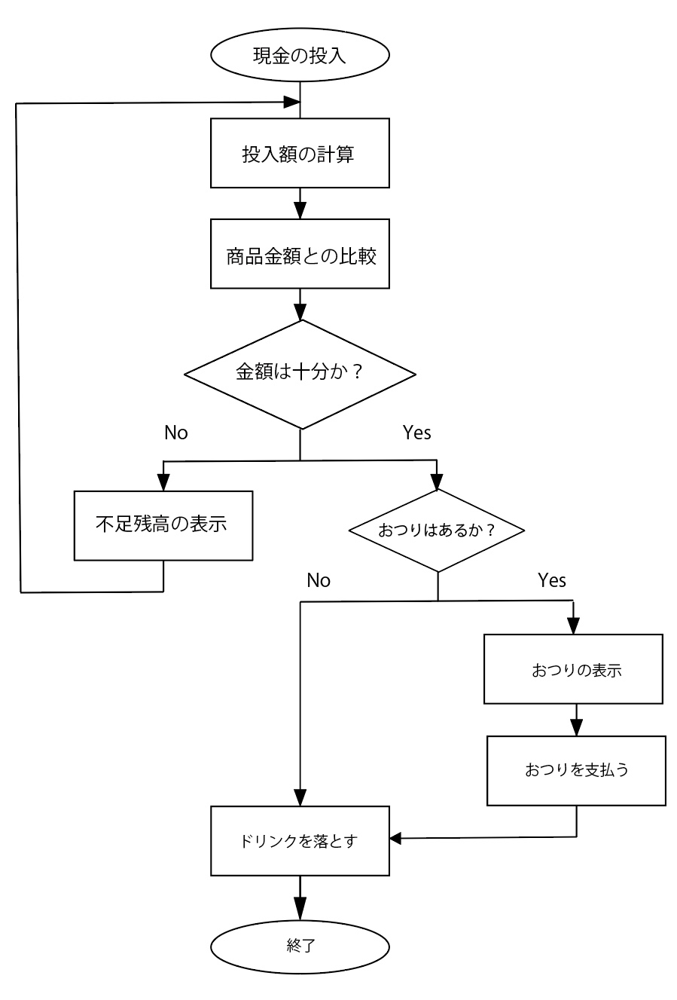

Algorithm / Date structure
< Lecture contents >
2018/9/27 ~ 10/9
・1day, 9/27 [What's Algorithm]
・2day, 9/28 [Flowchart / Start Scratch!]
・3day, 10/9 [Sugoroku game]
What's Algorithm?
アルゴリズム（英: algorithm ）とは、数学やコンピューティングなど、あるいはそれに関連する分野において、 問題を解くための手順を定式化した形で表現したものを言う。「問題」はその「解」を持っているが、アルゴリズムは正しくその解を得るための具体的手順および根拠を与える。 さらに多くの場合において効率性が重要となる。
Wikipedia参照（検索：アルゴリズム）
1日目では、アルゴリズムを自ら考え、課題を解決するという取り組みを行った。 その一例が「しめじソート」である。 課題：「しめじを長さ順に並べよ！」 この問いに対するもっとも有効な「アルゴリズム」はこうだ。 まず、しめじ全てを「２つ」づつ（奇数の場合は１つあまる）に分け、 ２つに分けたしめじの各グループで長さを比べる。長い方を右へ、短い方は左へ配置を変える。 次に左から右隣のしめじと、最初は各グループで長い方（右側）同士で長さを比べ、長い方を外へ、短い方を元の位置に戻す。 そのあと、順位が確定した２番目と他のしめじとも同様に長さを比べ、１〜４番目までの長さ順に並べる。（これと同じのことを残りの全てのグループで行なう。） この作業が終わったあとも、隣あうグループ同士で２つを長さ順に比較を行い、長い方を外へ、短い方は戻し、残ったしめじの中で最も長いものと長さを比べていく。（２つで比べ、１つは一方より長く、もう一つは短い） このようなグループの併合を上記と同じ手順で、全ての併合が終わるまで行なう。（もちろん長さ順に並べながら。） こうして「しめじソートのアルゴリズム」が完遂される。

人間の感覚や言語などが通用しないコンピュータや計算法式などにおいては「求め方」に様々な制限がある。 その中にアルゴリズムを取り入れることで、より効率的で、その機械的仕組みを（最大限に）活かした表現が可能になる。 ...ということがわかった。）
Charenge!
流しそうめんで平等にそうめんを分配できる方法
流しそうめんの問題点。
一般的な流しそうめんは、竹を半分に切断し、滑り台構造に組み立て、水を流し、その人工的な水流にそうめんを流すことである。 私たちのクラスも10月に行われた「交流会」で流しそうめんを催しとして行った。 しかし、「流しそうめん」はそうめんを流すところから離れた地点にいる人ほど、麺を取りにくく、必然的に素麺を流す地点に近い人に多く取り分があるというという不公平がある。 実際、10月の流しそうめんでは参加人数が多いほど、この問題が目立ち、遠い人ほど素麺の取り分が少ない傾向にあった。 では、この問題を「アルゴリズムを用いて解決できないだろうか、（あるいは軽減できないか）」実現性を失わない程度の範囲で、できる限り「アナログ」の方法で考えてみた。
idea 1 :「素麺が流れるのなら、人も流れる。」
流し素麺の不公平を解消するために、人の位置を定期で変え、循回させる方法。
流し素麺台の長さを30m、その中に20人の人が、10人づつ左右に分かれている時、一人と隣の人の間には1.5mほどの空きができる。
（コミュニケーションがあることを考えてもいい。）その均等に分割した1.5m間隔のガイドに従い、およそ１分に１回のペースで少しづつ、時計回り（もしくは反時計回り）に
移動していく。これで、20分くらいで1周することができ、全員が位置的な平等を得られる。（シンプルだが効率がいい上に、「簡単」。）
idea 2 :「回転流し素麺」
流し素麺の不公平を解消するために、流し台の構造を「楕円形」にする方法。
一方通行の不公平を防ぎ、「素麺を流す人」にとっても、構造的にどこからでも流しやすいので、均等に分配する調整が可能になる。
Flowchart!
次の授業の行程として、「身近に働く電子的なアルゴリズム」について考えた。信号機やゲーム機器など、多種多様なものがあげられたが、ここでは、簡易的なアルゴリズムとして「Vending Marchine(自動販売機)」を取り上げる。 対象に働くアルゴリズムを「フローチャート」形式で図式化し、かきおこすという作業の中で、自動販売機内部のメカニズムについての考察をした。